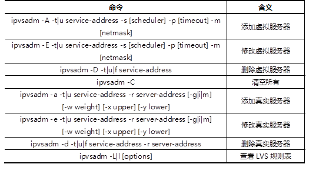

准备一台Linux服务器，安装ipvsadm软件包，练习使用ipvsadm命令，实现如下功能：
安装ipvsadm软件包，关于ipvsadm的用法可以参考man ipvsadm资料。常用ipvsadm命令语法格式如表-1所示。
表－1 ipvsadm语法格式
实现此案例需要按照如下步骤进行。
步骤一：使用命令增、删、改LVS集群规则
1）创建LVS虚拟集群服务器
[root@svr5 ~]# ipvsadm -A -t 192.168.0.254 -s wrr -p 30
2）为集群添加若干real server
[root@svr5 ~]# ipvsadm –a -t 192.168.0.254 -r 192.168.0.1 -m -w 1 [root@svr5 ~]# ipvsadm –a -t 192.168.0.254 -r 192.168.0.2 -m -w 2 [root@svr5 ~]# ipvsadm –a -t 192.168.0.254 -r 192.168.0.3 -m -w 3 [root@svr5 ~]# ipvsadm –a -t 192.168.0.254 -r 192.168.0.4 -m -w 4
3）修改集群服务器设置
[root@svr5 ~]# ipvsadm -E -t 192.168.0.254 -s sh -p 30
4）修改read server
[root@svr5 ~]# ipvsadm –a -t 192.168.0.254 -r 192.168.0.1 -m
5）查看LVS状态
[root@svr5 ~]# ipvsadm –Ln
6）保存所有规则
[root@svr5 ~]# service ipvsadm save
7）清空所有规则
[root@svr5 ~]# ipvsadm –C
使用LVS实现NAT模式的集群调度服务器，为用户提供Web服务：
使用4台虚拟机，1台作为Director调度器、3台作为Real Server、物理机作为客户端，拓扑结构如图-1所示。
图-1
实现此案例需要按照如下步骤进行。
步骤一：配置网络环境
1）设置Web服务器网络参数
[root@web1 ~]# vim /etc/sysconfig/network-scripts/ifcfg-eth0 DEVICE=eth0 ONBOOT=yes BOOTPROTO=static IPADDR=192.168.0.1 NETMASK=255.255.255.0 GATEWAY=192.168.0.254 DNS1=202.106.0.20 [root@web1 ~]# service NetworkManager stop [root@web1 ~]# chkconfig NetworkManager off [root@web1 ~]# service network restart [root@web1 ~]# iptables –F;service iptables save [root@web2 ~]# vim /etc/sysconfig/network-scripts/ifcfg-eth0 DEVICE=eth0 ONBOOT=yes BOOTPROTO=static IPADDR=192.168.0.2 NETMASK=255.255.255.0 GATEWAY=192.168.0.254 DNS1=202.106.0.20 [root@web2 ~]# service NetworkManager stop [root@web2 ~]# chkconfig NetworkManager off [root@web2 ~]# service network restart [root@web2 ~]# iptables –F;service iptables save [root@web3 ~]# vim /etc/sysconfig/network-scripts/ifcfg-eth0 DEVICE=eth0 ONBOOT=yes BOOTPROTO=static IPADDR=192.168.0.3 NETMASK=255.255.255.0 GATEWAY=192.168.0.254 DNS1=202.106.0.20 [root@web3 ~]# service NetworkManager stop [root@web3 ~]# chkconfig NetworkManager off [root@web3 ~]# service network restart [root@web3 ~]# iptables –F;service iptables save
2）自定义Web页面
[root@web1 ~]# echo “192.168.0.1” > /var/www/html/index.html [root@web2 ~]# echo “192.168.0.2” > /var/www/html/index.html [root@web3 ~]# echo “192.168.0.3” > /var/www/html/index.html
3）启动Web服务器软件
[root@web1 ~]# service httpd start [root@web2 ~]# service httpd start [root@web3 ~]# service httpd start
4)设置LVS调度器网络参数
[root@lvs ~]# vim /etc/sysconfig/network-scripts/ifcfg-eth0 DEVICE=eth0 ONBOOT=yes BOOTPROTO=static IPADDR=202.114.106.20 DNS1=202.106.0.20 [root@lvs ~]# vim /etc/sysconfig/network-scripts/ifcfg-eth1 DEVICE=eth0 ONBOOT=yes BOOTPROTO=static IPADDR=192.168.0.254 NETMASK=255.255.255.0 DNS1=202.106.0.20 [root@lvs ~]# service NetworkManager stop [root@lvs ~]# chkconfig NetworkManager off [root@lvs ~]# service network restart [root@lvs ~]# iptables –F;service iptables save [root@lvs ~]# sed -i '/ip_forward/s/0/1/' sysctl.conf //开启路由转发 [root@lvs ~]# sysctl -p
步骤二：调度器安装软件并启动服务
1）安装软件
[root@lvs Packages]# rpm –ihv ipvsadm-1.25-10.el6.x86_64.rpm
2）启动服务
[root@lvs Packages]# service ipvsadm start [root@lvs Packages]# chkconfig ipvsadm on
步骤三：部署LVS-NAT模式调度器
1）创建集群服务器
[root@lvs ~]# ipvsadm -A -t 202.114.106.20:80 -s wrr
2）添加真实服务器
[root@lvs ~]# ipvsadm -a -t 202.114.106.20:80 -r 192.168.0.1 -w 1 [root@lvs ~]# ipvsadm -a -t 202.114.106.20:80 -r 192.168.0.2 -w 2 [root@lvs ~]# ipvsadm -a -t 202.114.106.20:80 -r 192.168.0.3 -w 3
3）查看规则列表，并保存规则
[root@lvs ~]# ipvsadm –Ln [root@lvs ~]# service ipvsadm save
步骤四：客户端测试
客户端使用curl命令反复连接http://202.114.106.20，查看访问的页面是否会轮询到不同的后端真实服务器。
使用LVS实现DR模式的集群调度服务器，为用户提供Web服务：
使用4台虚拟机，1台作为Linux路由器、1台作为Director调度器、2台作为Real Server、物理机作为客户端，拓扑结构如图-2所示。
图-2
实现此案例需要按照如下步骤进行。
步骤一：配置网络环境
1）设置Web服务器网络参数
[root@web1 ~]# vim /etc/sysconfig/network-scripts/ifcfg-eth0 DEVICE=eth0 ONBOOT=yes BOOTPROTO=static IPADDR=192.168.0.1 NETMASK=255.255.255.0 GATEWAY=192.168.0.254 DNS1=202.106.0.20 [root@web1 ~]# vim /etc/sysconfig/network-scripts/ifcfg-lo:0 DEVICE=lo:0 ONBOOT=yes BOOTPROTO=static IPADDR=192.168.0.253 NETMASK=255.255.255.255 [root@web1 ~]# vim /etc/sysctl.conf .. .. net.ipv4.conf.all.arp_ignore = 1 net.ipv4.conf.lo.arp_ignore = 1 net.ipv4.conf.lo.arp_announce = 2 net.ipv4.conf.all.arp_announce = 2 [root@web1 ~]# sysctl -p [root@web1 ~]# service NetworkManager stop [root@web1 ~]# chkconfig NetworkManager off [root@web1 ~]# service network restart [root@web1 ~]# iptables -F;service iptables save [root@web2 ~]# vim /etc/sysconfig/network-scripts/ifcfg-eth0 DEVICE=eth0 ONBOOT=yes BOOTPROTO=static IPADDR=192.168.0.2 NETMASK=255.255.255.0 GATEWAY=192.168.0.254 DNS1=202.106.0.20 [root@web2 ~]# vim /etc/sysconfig/network-scripts/ifcfg-lo:0 DEVICE=lo:0 ONBOOT=yes BOOTPROTO=static IPADDR=192.168.0.253 NETMASK=255.255.255.255 [root@web2 ~]# vim /etc/sysctl.conf .. .. net.ipv4.conf.all.arp_ignore = 1 net.ipv4.conf.lo.arp_ignore = 1 net.ipv4.conf.lo.arp_announce = 2 net.ipv4.conf.all.arp_announce = 2 [root@web2 ~]# sysctl -p [root@web2 ~]# service NetworkManager stop [root@web2 ~]# chkconfig NetworkManager off [root@web2 ~]# service network restart [root@web2 ~]# iptables -F;service iptables save
2）自定义Web页面
[root@web1 ~]# echo “192.168.0.1” > /var/www/html/index.html [root@web2 ~]# echo “192.168.0.2” > /var/www/html/index.html
3）启动Web服务器软件
[root@web1 ~]# service httpd start;chkconfig httpd on [root@web2 ~]# service httpd start;chkconfig httpd on
4)设置LVS调度器网络参数
[root@lvs ~]# vim /etc/sysconfig/network-scripts/ifcfg-eth0 DEVICE=eth0 ONBOOT=yes BOOTPROTO=static IPADDR=192.168.0.10 NETMASK=255.255.255.0 GATEWAY=192.168.0.254 DNS1=202.106.0.20 [root@lvs ~]# vim /etc/sysconfig/network-scripts/ifcfg-eth0:0 DEVICE=eth0:0 ONBOOT=yes BOOTPROTO=static IPADDR=192.168.0.253 NETMASK=255.255.255.0 GATEWAY=192.168.0.254 DNS1=202.106.0.20 [root@lvs ~]# service NetworkManager stop [root@lvs ~]# chkconfig NetworkManager off [root@lvs ~]# service network restart [root@lvs ~]# iptables -F;service iptables save
5）设置Linux路由器网络参数
[root@router ~]# vim /etc/sysconfig/network-scripts/ifcfg-eth0 DEVICE=eth0 ONBOOT=yes BOOTPROTO=static IPADDR=202.114.106.20 DNS1=202.106.0.20 [root@router ~]# vim /etc/sysconfig/network-scripts/ifcfg-eth1 DEVICE=eth0 ONBOOT=yes BOOTPROTO=static IPADDR=192.168.0.254 NETMASK=255.255.255.0 DNS1=202.106.0.20 [root@router ~]# service NetworkManager stop [root@router ~]# chkconfig NetworkManager off [root@router ~]# service network restart [root@router ~]# iptables -F;service iptables save
6）设置Linux路由器的SNAT、DNAT功能
[root@router ~]# sed -i '/ip_forward/s/0/1/' sysctl.conf //开启路由转发 [root@router ~]# sysctl -p [root@router ~]# iptables -t nat -A POSTROUTING -s 192.168.0.0/24 -p tcp –j SNAT --to-source 202.114.106.20 [root@router ~]# iptables -t nat -A PREROUTING -d 202.114.106.20 -p tcp --dport 80 –j DNAT --to-destination 192.168.0.253:80 [root@router ~]# service iptables save
步骤二：调度器安装软件并启动服务
1）安装软件
[root@lvs Packages]# rpm –ihv ipvsadm-1.25-10.el6.x86_64.rpm
2）启动服务
[root@lvs Packages]# service ipvsadm start [root@lvs Packages]# chkconfig ipvsadm on
步骤三：部署LVS-DR模式调度器
1）创建集群服务器
[root@lvs ~]# ipvsadm -A -t 192.168.0.253:80 -s wrr
2）添加真实服务器
[root@lvs ~]# ipvsadm -a -t 192.168.0.253:80 -r 192.168.0.1 -g -w 1 [root@lvs ~]# ipvsadm -a -t 192.168.0.253:80 -r 192.168.0.2 -g -w 2
3）查看规则列表，并保存规则
[root@lvs ~]# ipvsadm –Ln [root@lvs ~]# service ipvsadm save
步骤四：客户端测试
客户端使用curl命令反复连接http://202.114.106.20，查看访问的页面是否会轮询到不同的后端真实服务器。